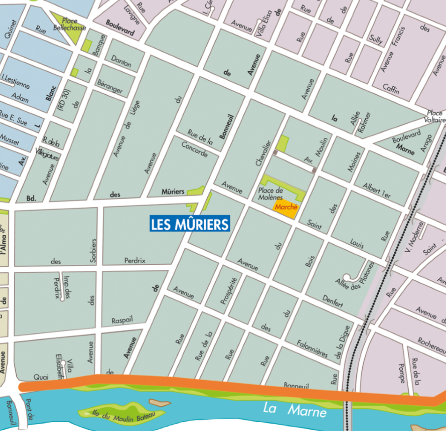

Le quartier des Mûriers ne possède pas (encore) de rues en référence à la Seconde Guerre Mondiale. Cependant, cela pourrait évoluer ! Par exemple, la ville de Saint-Maur ne possède pas de rue en hommage à Oradour-sur-Glane, pourtant ville filleule de Saint-Maur